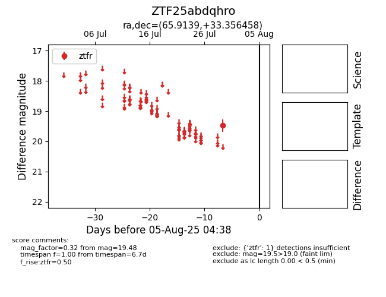

Target ZTF25abdqhro at 2025-08-05 04:38, see:
FINK: fink-portal.org/ZTF25abdqhro
Lasair: lasair-ztf.lsst.ac.uk/objects/ZTF25abdqhro
ALeRCE: alerce.online/object/ZTF25abdqhro
alt names
ZTF25abdqhro (ztf,fink)
coordinates:
equatorial (ra, dec) = (65.9139,+33.35646)
galactic (l, b) = (165.8355,-11.30841)
photometry
last ztfr=19.48
1 ztfr detections
